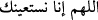
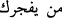
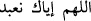
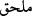

vardı. Zeyd bin Sâbit (r.a.)’ın mushafına gelince o bütün bunlardan sâlim idi. İbni
Mes‘ûd ve Übey (r.a.)’nın mushafları neshedilmiş olup Zeyd (r.a.)’ın mushafı ile amel
edilmektedir. Çünkü Efendimiz (s.a.) her Ramazan ayında Cebrâil (a.s.)’a Kur’ân-ı
Kerîm’i bir defâ arz ederdi. Vefât ettiği senenin Ramazan ayında ise iki defâ arz etti.
Zeyd (r.a.)’ın mushafı son arza göre olup İbn Mes‘ûd ve Übey (r.a.)’nın mushafları öyle
değildi. Nebî (s.a.) vefât etmeden önce Zeyd (r.a.)’ın mushafına göre Kur’ân okur ve
namaz kırâatinde bulunurdu. İbni Mes‘ûd (r.a.) demiştir ki: Kur’ân-ı Kerîm’deki
sûrelerin sayısı yüz on ikidir.
Fakîh, Bostan’da demiştir ki: Yüz on iki demesinin sebebi Muavvizeteyn’i Kur’ân-ı
Kerîm’den saymamasıdır. Onları mushafına almıyor ve diyordu ki, “Onlar semâdan
inmiş olup Âlemlerin Rabbi’nin kelâmındandır. Lâkin Rasûlullah (s.a.) onlarla rukye
yapar ve Allah’a sığınırdı.” O, bu sûrelerin Kur’ân-ı Kerim’den olup olmadıkları
husûsunda şüpheye düştü. Bu sebeple de mushafına almadı.
Mücâhid demiştir ki: “Kur’ân sûrelerinin sayısı toplamda yüz on üçtür.” Böyle
demesinin sebebi Enfâl ve Tevbe sûrelerini tek sûre olarak kabul etmesidir. Übey bin
Ka‘b da Kunut duâlarını iki sûre kabul ettiği için toplam sûre sayısının yüz on altı
olduğunu söylemiştir. Kunut duâlarından müteşekkil olan bu iki sûrenin birincisi
’den başlayıp
’de sona erer. İkincisi de
’den başlayıp
’da sona erer. Zeyd bin
Sâbit ise Kur’ân sûrelerinin sayısının yüz on dört olduğunu söylemiştir ki umum
sahâbenin görüşü de budur ve Osman bin Affân (r.a.)’ın mushafında ve diğer şehirlere
gönderilen mushaflarda da durum böyledir. Dolayısıyla Muavvizteyn Kur’ân-ı
Kerîm’den iki sûredir.
Ebû Muâviye Osman bin Vâkıd’ın şöyle dediğini rivâyet etmiştir: Babam beni
Muhammed bin Münkedir’e gönderip Muavvizeteyn sûrelerinin Kur’ân-ı Kerîm’den
olup olmadığını sordurdu. Muhammed bin Münkedir şöyle dedi: Onların Kitap’tan
olmadığını söyleyenlerin üzerine Allah’ın, meleklerin ve bütün insanların lâneti olsun!
Nisâbu’l-ihtisâb’da da şöyle geçer: Bir kimse Muavvizeteyn dışında bir Kur’ân
âyetini inkâr etse kâfir olur.
Ekmel’de geçtiğine göre Süfyân bin Sahtân şöyle demiştir: Muavvizeteyn Kur’ân’dan
değildir diyen kimse, İbn Mes‘ûd’un te’vîlinden dolayı, kâfir olmaz. Aynı görüş
Mutarrizî’nin Muğrib isimli kitabında da zikredilmektedir. Hediyyetü’l-mehdiyyîn
kitabında da şöyle demiştir: “Muavvizeteyn’in Kur’ân’dan olduğunu inkâr etmekle
alâkalı meşâyıhın farklı görüşleri vardır. Sahîh olan kâfir olacağıdır.”
Melik-i Mennân olan Allah’ın lütfuyla Kur’ân-ı Kerîm’den Felâk sûresi tamam
olmuştur.